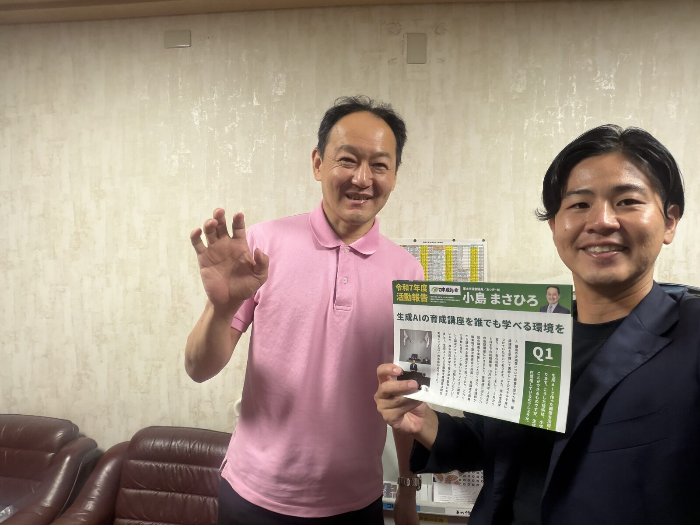

厚木市議会議員の小島さんとAI活用に向けた意見交換会をさせて頂きました。ご自身のさまざまな活動にAIを使われながら厚木市議として活動されてきた小島さんの議員活動のこれまでを伺いながら、今後のAIを用いた可能性・活用の幅について意見交換をさせて頂きました。今後もAIの可能性の幅を広げていく活動として、さまざまな意見交換を続けさせていただきます！
小島まさひろさんについて
今回お時間をいただいたのは、厚木市議会議員の小島まさひろさん（日本維新の会）。地元・厚木で生まれ育ち、タクシードライバーとして働かれた経験を持つ市議です。市政の現場感覚と、生活に近い視点をあわせ持たれている方でした。
プロフィール
- お名前
- 小島 まさひろ（厚木市議会議員／日本維新の会）
- 生まれ
- 1970年2月 厚木市生まれ・厚木市水引在住
- 学歴
- 厚木市立厚木小学校、南毛利中学校 卒業／神奈川県立栗原高等学校（現・座間総合高等学校）卒業
- ご経歴
- 地元厚木でタクシードライバーに従事
- 選挙
- 厚木市議会議員選挙にて 1,732票 を得て当選
- 身を切る改革（議員報酬・定数の削減、世襲制限・多選禁止）
- 将来への投資（出産・教育費用の無償化、保育士の待遇改善）
- 効率的な公共交通システムの導入（タクシー活用のハイブリッド型バス）
- 動物との共生（アニマルポリス創設、譲渡会の活性化）
- 防災対策の充実（避難所の確保・備蓄の再点検、ペット同伴避難）
- 自治体DX推進（行政のデジタル化で市民サービスを向上。生み出した財源と職員で医療・介護・福祉を充実）
🔗 小島さんについて：小島まさひろ official サイト
ディスカッションの整理
【タイトル】 議員活動・広報および教育・医療課題の解決に向けた、生成AI活用と自動化の可能性に関する意見交換
【目的】 小島さんの議員活動（議会だよりの改善や政策、教育現場でのAI活用など）において、AIをどのように効果的に活用できるかを共有し、team AIC側が持つ自動化のノウハウを交えながら、今後の連携の可能性を探ること。
小島さんのお話のまとめ
小島さんは厚木市議会議員として、市政の課題解決や広報活動の改善、教育分野に生成AIを積極的に取り入れようと活動されています。
1. 教育現場へのAI活用の提案
小島さんは2026年6月5日の議会において、「小・中学校におけるいじめやディスレクシアの対策に、生成AIを活用できるか」というテーマで提案を行われています。技術を入れること自体ではなく、現場で子どもをどう支えるかという課題設定が起点になっている点が印象的でした。
2. 医療システムの費用削減の提案
厚木市立病院などで利用されている電子カルテのシステム費用を削減し、その分を医療従事者の給与や人員確保に回すべきではないか、というお考えを伺いました。
3. 医療業界の構造的な課題（意見交換より）
これに対し、私（横塚）からは業界の現状をお伝えしました。システム会社は病院から利益を出すのが難しくなっており、現在は新薬開発のためのデータ（リアルワールドデータ）を提供することで製薬会社から収益を得るモデルへシフトしている、という流れがあります。あわせてAI人材の人件費高騰などもあり、単なる値引き交渉ではなく医療制度の根本的な課題を解決する必要がある、という見解をお話ししました。
要点
今日の感想
「AIで何ができるか」ではなく「目の前の困りごとをどう解けるか」から入る方と話すと、話の進み方がまったく違うと感じました。いじめやディスレクシアへの支援、医療の人員確保、議会だよりの伝わりやすさ——どれも技術の前に現場の課題があって、AIはその手段として後から出てくる。この順番で話せたのが、今日いちばんの収穫でした。
今後もAIの可能性の幅を広げていく活動として、さまざまな方との意見交換を続けさせていただきます。小島さん、お時間をいただきありがとうございました。